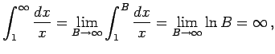
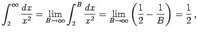
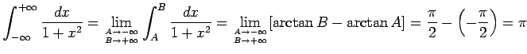

Inhalt Index DeskTop Bronstein

 Integralrechnung Bestimmte Integrale Uneigentliche Integrale, Stieltjes- und Lebesgue-Integrale Integrale mit unendlichen Integrationsgrenzen
Integralrechnung Bestimmte Integrale Uneigentliche Integrale, Stieltjes- und Lebesgue-Integrale Integrale mit unendlichen Integrationsgrenzen


Die Integrale (8.77), (8.78a) und (8.78b) sind jeweils die Grenzwerte der Flächeninhalte der Figuren, die in den folgenden 9 Abbildungen dargestellt sind.
| Beispiel A |
|
 (divergent). |
| Beispiel B |
|
 (konvergent). |
| Beispiel C |
|
, |